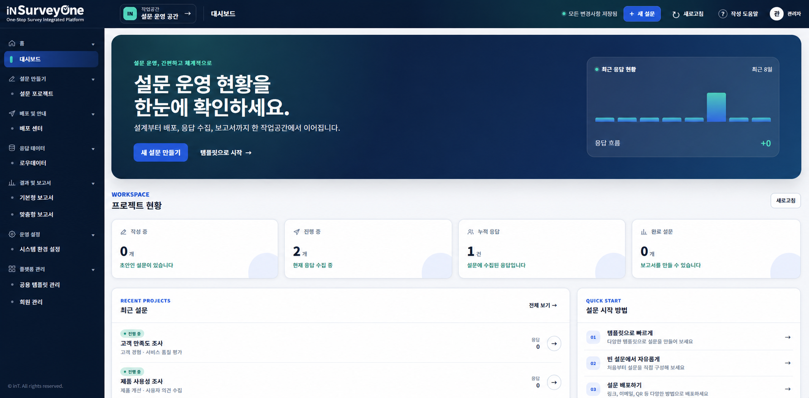
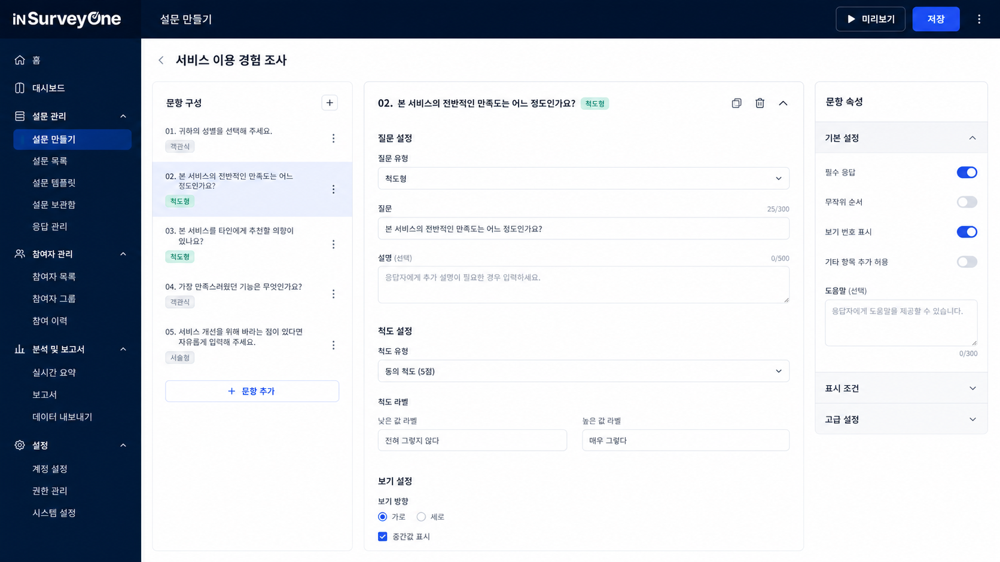
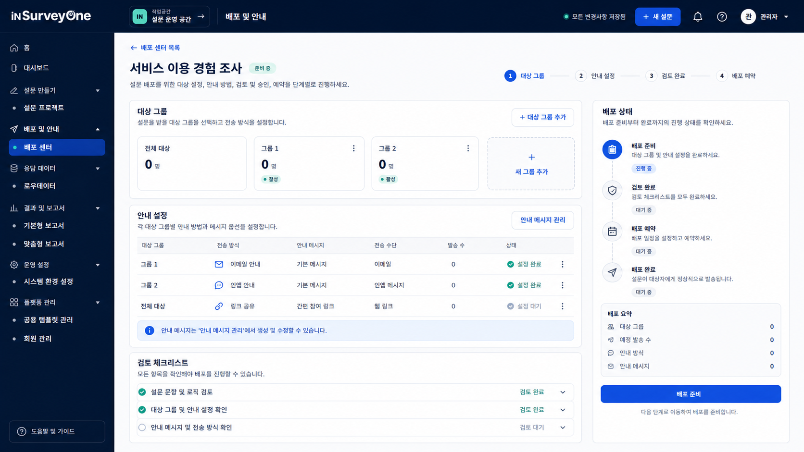
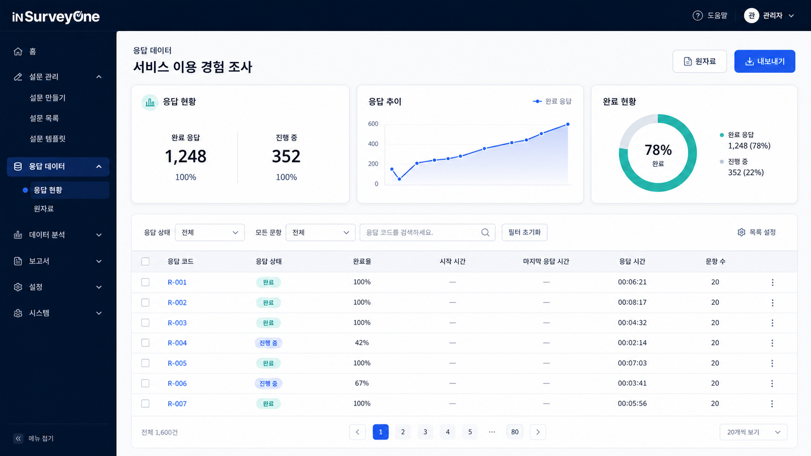
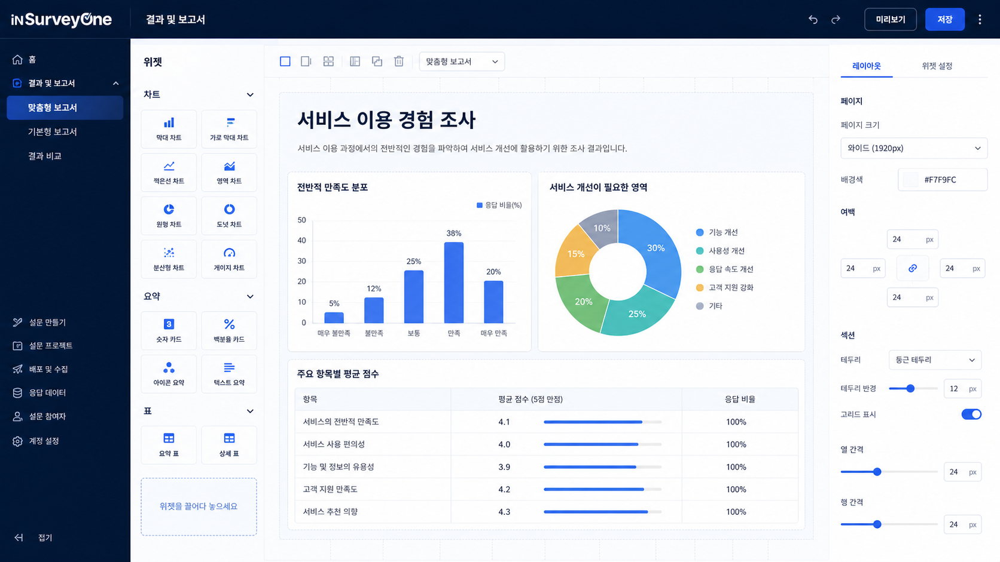

설문 설계
새 설문을 만들거나 공용 템플릿을 기준으로 문항과 보기를 구성하고 설문 화면을 점검합니다.
- 설문 프로젝트 관리
- 문항·보기 구성
- 공용 템플릿 활용
설문 운영 통합 플랫폼
인서베이원은 문항 구성과 배포 준비, 실시간 응답 수집, 분석 보고서 생성을 단일 작업 공간에서 심리스하게 연결합니다. 프로세스의 단절 없는 유기적인 흐름을 통해 설문 조사 운영의 효율성을 극대화합니다.
제공 가능한 배포 채널과 외부 시스템 연계 범위는 도입 환경과 운영 조건에 따라 달라집니다.
6단계 운영 흐름
단발성 문항 작성에 그치지 않고 프로젝트 설정, 사전 검토, 실시간 응답 수집, 최종 리포팅에 이르는 전 과정을 체계적인 운영 단위로 구조화했습니다. 데이터와 결과가 단절 없이 이어지는 최적의 서베이 워크플로우를 경험할 수 있습니다.
조사 목적, 타겟 대상, 운영 기간 및 거버넌스(담당 권한)를 정의하여 프로젝트의 명확한 기준을 수립합니다.
문항 레이아웃, 선택지, 응답 로직을 정밀하게 구성하고 참여자가 마주할 실제 설문 인터페이스를 최적화합니다.
설문 콘텐츠의 정합성과 안내 정보를 최종 점검하고, 수집 목적과 운영 환경에 최적화된 채널별 배포 체계를 준비합니다.
실시간으로 설문 진행 상태와 응답 현황을 모니터링하며, 타겟 회수율 달성을 위한 상시 운영 조치를 수행합니다.
수집된 응답 데이터를 로우 데이터 단위로 검증·정제하고, 통계 분석 및 후속 시스템 연계에 최적화된 데이터 포맷을 가공합니다.
조사 결과를 직관적인 대시보드 및 맞춤형 보고 구조로 템플릿화하여, 의사결정권자와 이해관계자에게 인사이트를 신속하게 공유합니다.
통합 모니터링 대시보드
본 데모 화면은 전체 설문 프로젝트 현황, 실시간 응답 트렌드, 그리고 빈번하게 사용하는 퀵 메뉴(Quick Start)를 집약한 통합 대시보드의 직관적인 구성 예시입니다.

본 화면은 실제 제품의 화면 구조와 워크플로우를 기반으로, 민감한 개인정보 및 운영 식별자를 비식별화하여 재구성한 오픈 데모입니다. 각 화면에서 유기적으로 이어지는 업무 흐름과 단계별 작업 환경을 한눈에 직관적으로 비교·검증할 수 있습니다.

문항 유형과 보기, 척도와 표시 조건을 한 작업 화면에서 구성하고 미리보기 전 상태를 점검합니다.

대상 그룹과 안내 방법을 정리하고 검토 항목과 배포 상태를 단계별로 확인합니다.

완료와 진행 상태, 응답 추이를 확인하고 비식별 응답 코드를 기준으로 원자료를 검토합니다.

차트와 요약, 표 위젯을 배치해 조사 목적과 전달 대상에 맞는 결과 화면을 구성합니다.
맥락 기반 운영 기능 설계
설문 운영자가 작업 순서에 따라 헤매지 않고 자연스럽게 다음 단계로 전환할 수 있도록, 모든 핵심 기능을 직관적인 4대 업무 영역으로 구조화했습니다. 실무자의 업무 맥락을 고스란히 반영하여 운영 편의성을 극대화합니다.
새 설문을 만들거나 공용 템플릿을 기준으로 문항과 보기를 구성하고 설문 화면을 점검합니다.
참여자에게 전달할 설문과 안내 내용을 준비하고 진행 상태를 운영 기준에 맞춰 관리합니다.
설문별 응답 현황을 확인하고 수집된 원자료를 후속 검토와 분석에 활용할 수 있도록 관리합니다.
응답 결과를 확인하고 조사 목적과 전달 대상에 맞는 기본형·맞춤형 보고 구성을 준비합니다.
실제 배포 채널, 외부 시스템 연계와 제공 기능은 계약·구축 범위 및 운영 환경에 따라 달라질 수 있습니다.
책임 있는 설문 거버넌스
설문 목적, 수집 항목, 그리고 결과의 활용 범위를 사전에 명확히 정의하고, 응답자 권리 보호를 위한 안내와 운영 담당자의 책임을 실제 업무 프로세스에 엄격히 반영해야 합니다. 데이터의 가치는 올바른 기준과 투명한 절차에서 시작됩니다.
조사 목적에 필요한 질문과 대상, 수집 기간을 정하고 불필요한 항목을 줄입니다.
참여자가 설문 목적과 응답 정보의 활용 범위를 이해할 수 있도록 안내 기준을 준비합니다.
설문 작성, 응답 확인과 결과 공유에 필요한 역할과 공개 범위를 운영 환경에 맞춰 정합니다.
표본, 문항 구조와 조사 맥락을 함께 살펴 결과가 과도하게 해석되지 않도록 담당자가 검토합니다.
인서베이원(inSurveyOne)은 설문 운영의 효율성과 결과 데이터 정제를 완벽히 지원하는 업무 효율화 도구입니다. 표본 설계의 타당성, 문항의 적절성, 그리고 결과 해석 및 비즈니스 활용 결정은 조사 목적과 도메인 맥락을 가장 잘 이해하고 있는 담당자의 전문적인 검토를 바탕으로 진행되어야 합니다.
아울러 개인정보 처리 및 보관 기간, 접근 권한 관리, 외부 시스템 연계 기준은 솔루션을 도입하는 조직의 내부 보안 정책 및 관련 법규에 부합하도록 맞춤 설계하여 운영해야 합니다.
제품 도입 및 맞춤형 컨설팅
현재 기획 중이신 조사 목적, 타겟 응답자 군, 문항 구성안, 그리고 희망하시는 배포 채널과 최종 리포트 포맷을 공유해 주세요. 인서베이원(inSurveyOne)을 최적으로 접목할 수 있는 적용 범위와 아키텍처를 함께 검토해 드리겠습니다.
인서베이원 도입 상담